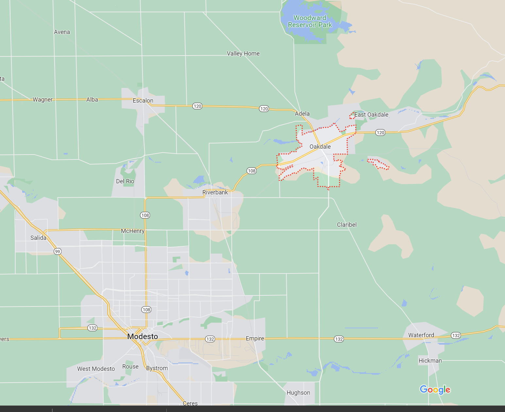

Introduction
Hello! my name is Jacob Boss, and this is my first Web Page! please be patient with me,
if there is something currently wrong or funny here, it will be fixed or edited shortly!
also overtime I will probaly do alot of differant things here as I get more comfertable with coding and developing web pages,
so be sure to check back again later to see if anything has changed!
Currently, I am living in Oakdale California, if you would like to get in contact with me please use one of the links below under
"Contact Info", but here is a map of my city of oakdale!

About Me
Web development
Believe it or not, i have just started to learn how to program and develop websites (like this one) only 6 days ago!
I have been able to learn the programing language of Java, and now that im making this website, I can ofically
say that I have learned HTML and CSS,and im excited to apply this knowlege and learn more!
I have been working as a plumber here in the California area for the last 3 years, and from this i have gained many useful skills
that i know will help me as i persue my career as a web developer/program engineer! if you are looking to hire on
someone who is a hard worker, a fast learner, and a good general positive member of your team, contact me via email or facebook
below!
I do have other things that i like to do besides code! here is a list of some of them:
- Plumbing
- Video games
- watching TV with my wife